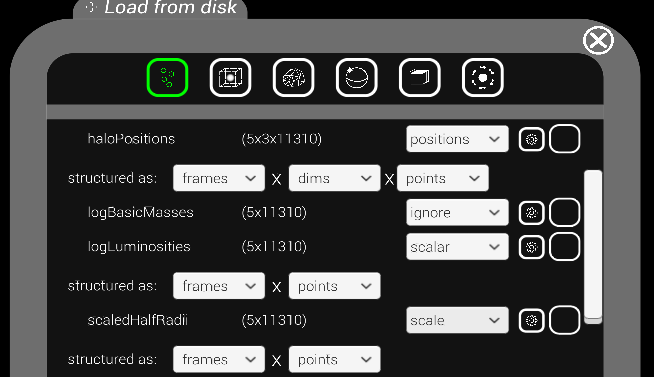
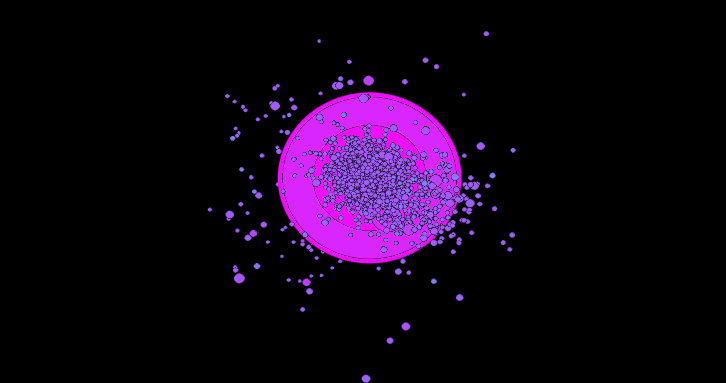

Point clouds - ADVANCED
Get the dataset
The dataset is based off the first five frames of a Galacticus run [1]. The data itself was simulated and collected by Carnegie postdoc Sachi Weerasooriya! You can find it titled as ‘pointcloud-advanced.h5’ in the current folder. As this dataset is much more complex compared to the basic example, inspecting it using a tool like HDFView is highly recommended before proceeding!
Process such that it is compatible
You can run the Python script pointcloud-advanced-preprocess.py to convert the starting HDF5 data into an acceptable form. This is more involved than the basic example, as it entails going through each Output group in the Galacticus saving hierarchy and concatenating the results together. There are also some modifications to the original data (multiplying by 1000, taking the log, etc) that are done to make it look better in the VizLab.
Load in the software
Once you’ve got the compatible HDF5 file, put it on the VizLab, start up the software and use the ‘Load from disk’ option on the radial menu to load it in. You’ll want to assign each dataset in the menu as shown below (you can also assign the masses as a scalar, it’s just the luminosities look better on this particular dataset):
{kind=link}
Once you hit load, you’ll need to go into the Animation settings and toggle off interpolation, as each point position is not stored contiguously in the data from frame-to-frame. But doing that and setting the colormap to ‘cool’ should give you the animation below:
{kind=link}